David J. Masiello
Professor of Chemistry
Adjunct Professor of Materials Science and Engineering
Adjunct Professor of Applied Mathematics
David J. Masiello is a professor of Chemistry, adjunct professor of Applied Mathematics, and adjunct professor of Materials Science and Engineering at the University of Washington.
Education
Ph.D. Chemical Physics | University of Florida | 2004
B.S. Mathematics | University of Florida | 1999
Group Publications
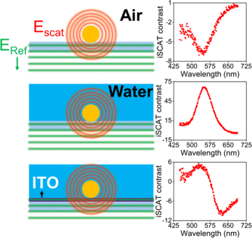
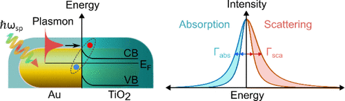
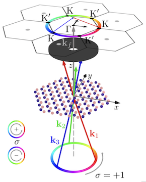
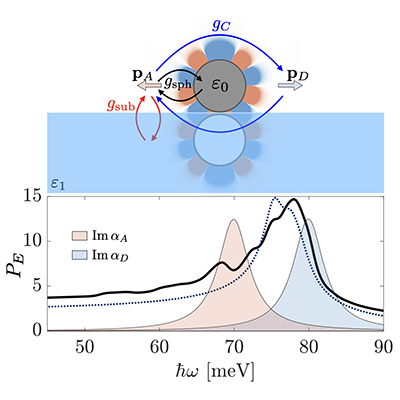
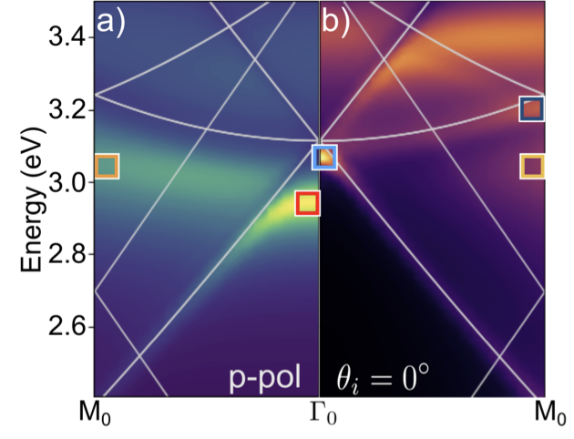
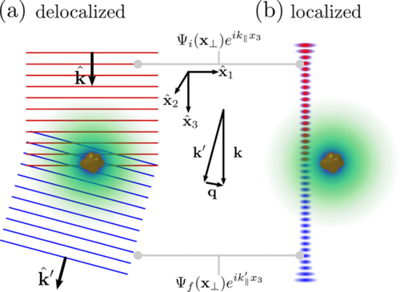
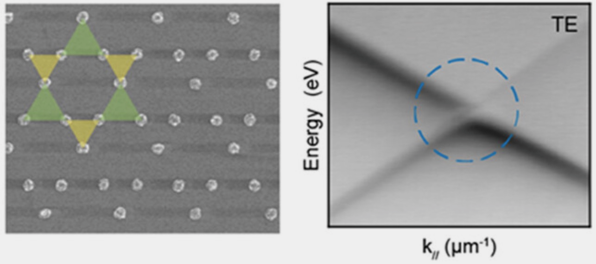


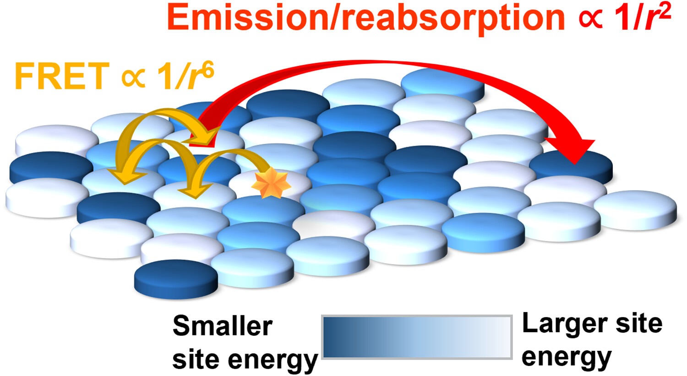
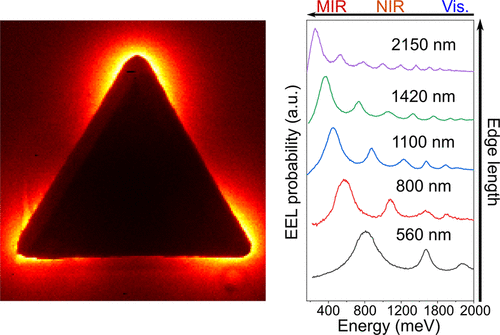


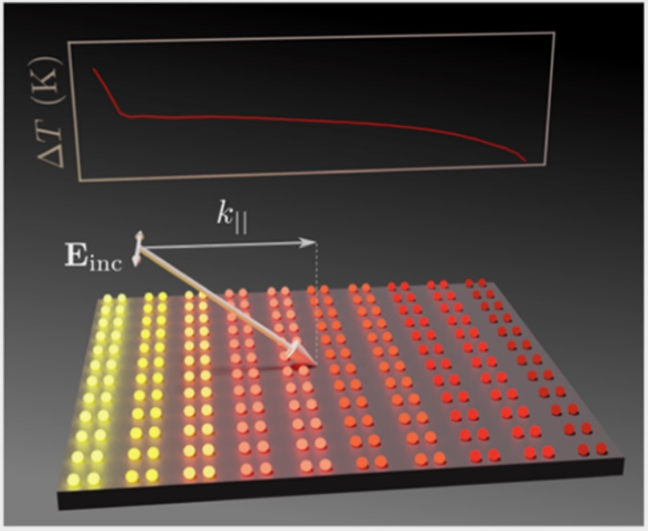
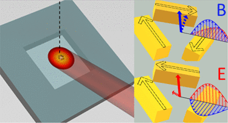
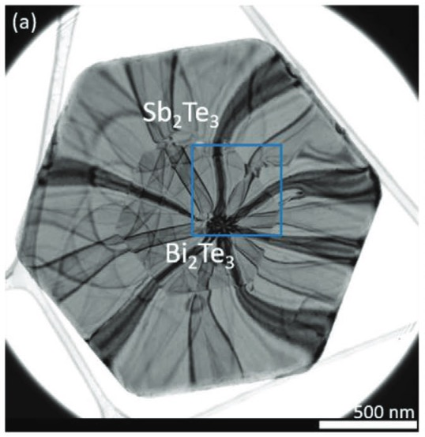


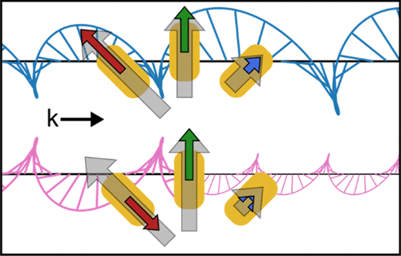

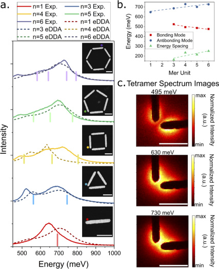

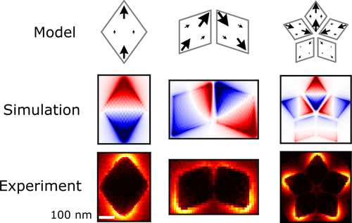


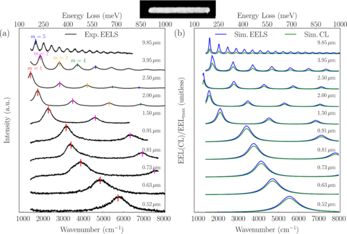
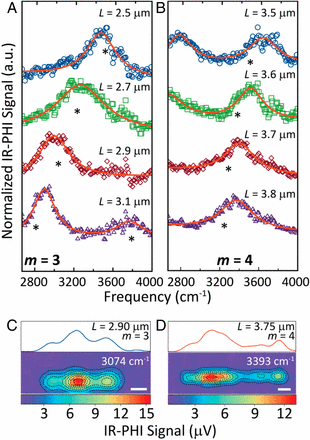

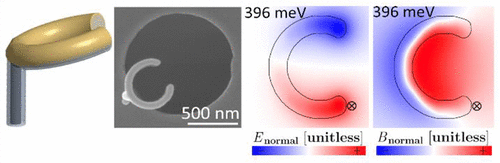

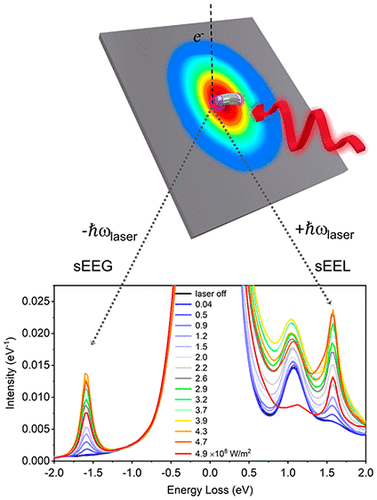


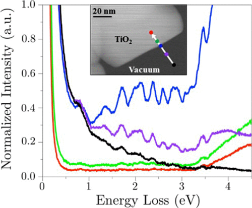
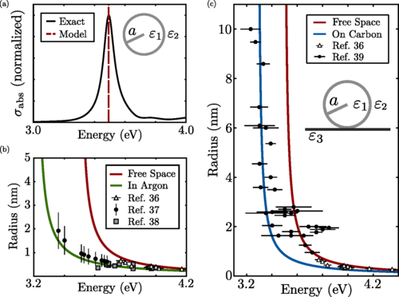
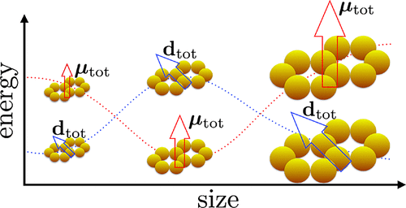
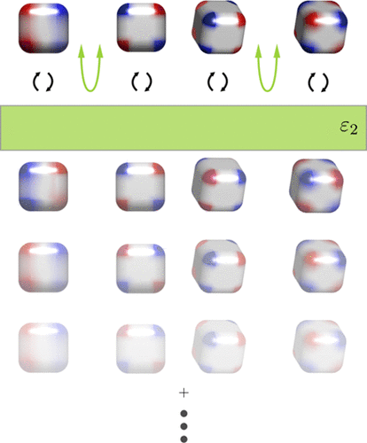


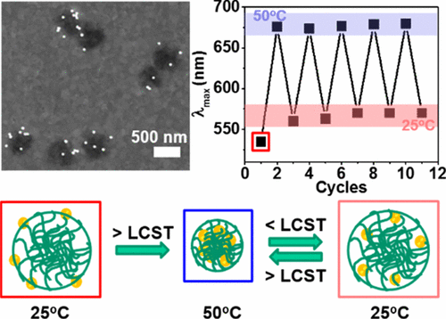
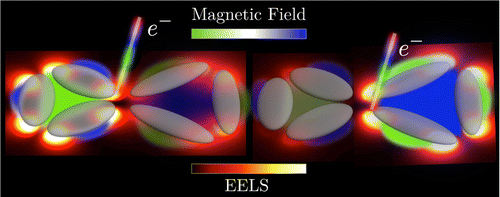
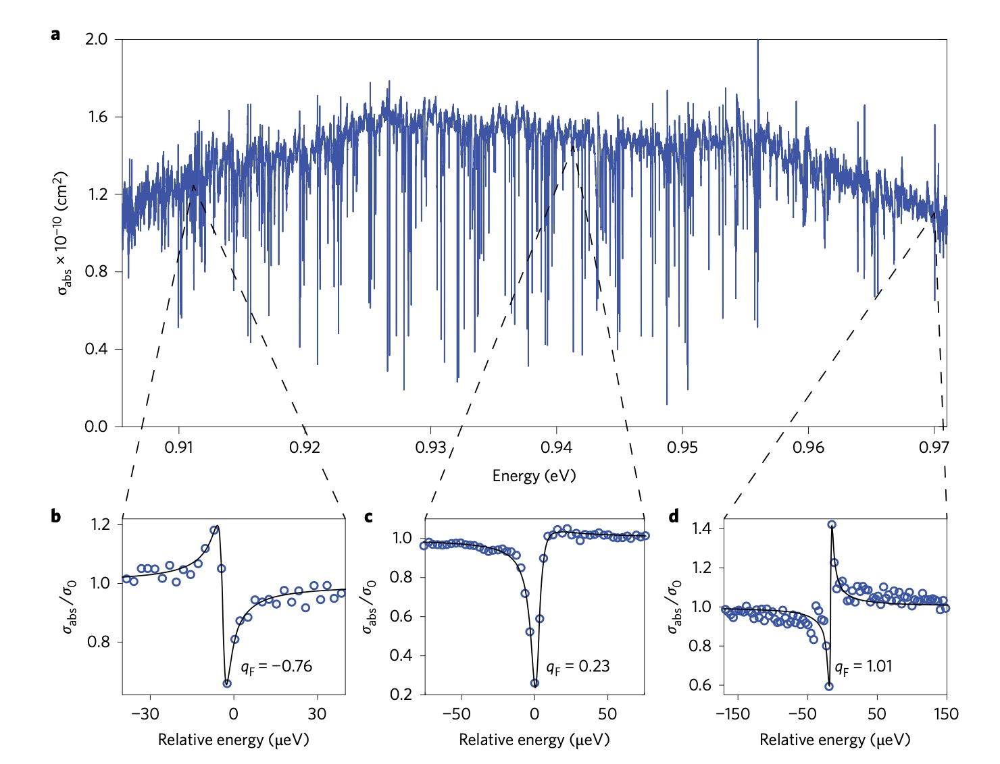
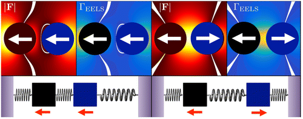


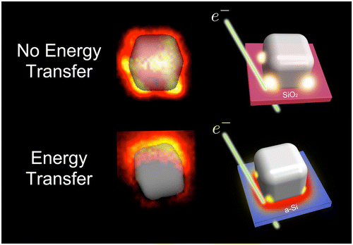


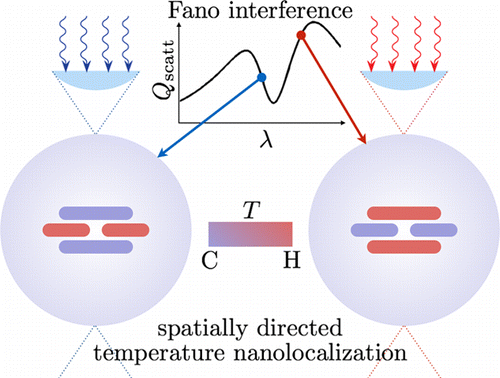


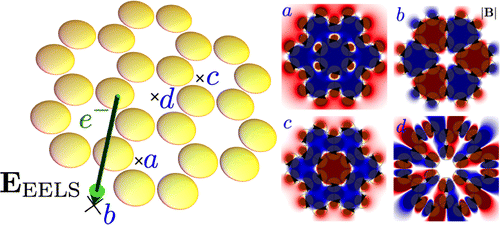
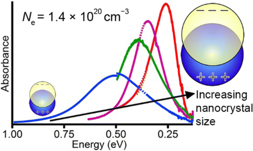
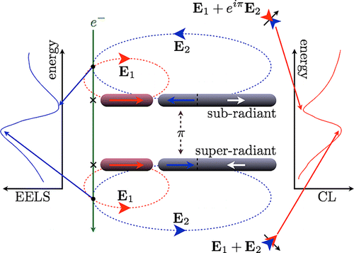


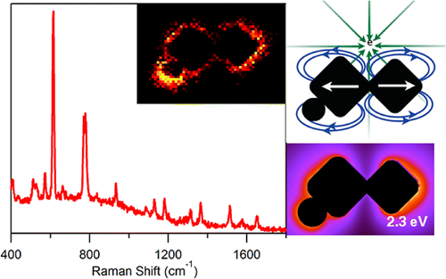

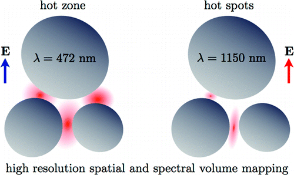
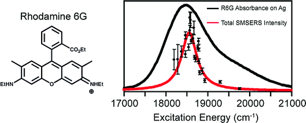
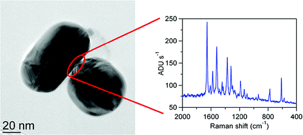